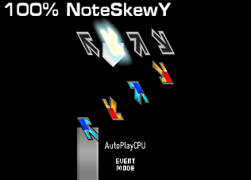

Modifiers¶
Introduced in  ITG
ITG
This list is complete (as of  NotITG v4.0.1), but sorely lacking in descriptions/images. Want to help contribute to
these docs? The source is available at https://gitlab.com/CraftedCart/notitg_docs
NotITG v4.0.1), but sorely lacking in descriptions/images. Want to help contribute to
these docs? The source is available at https://gitlab.com/CraftedCart/notitg_docs
All # are ints, example: spline#rotx# can be spline1rotx3
All % are floats, example: %x can be 1.5x
* Not 100% accurate as it's hard to search for mod names like "X" that also commonly appear outside of mod usage<noteskin>¶
where <noteskin> is the name of a note skin
Introduced in  ITG
ITG
Sets the player’s noteskin (eg: metal)
This does not seem to work from GameState.ApplyModifiers() - use GameState.LaunchAttack(), or a
#MODS/#ATTACKS section in your .sm file.
%x¶
Introduced in  ITG
ITG
Sets the scroll speed to use XMod at a given speed
With no other modifiers, 1x causes arrows to scroll up 1/10th of the screen (the size of the arrow sprite) per beat.
AddScore¶
Introduced in  ITG
ITG
Alternate, Ultraman¶
Introduced in  ITG
ITG
(For more complicated mods, consider using column specific Reverse instead)
Reverses the second and forth columns
ApproachType¶
ArrowCull¶
ArrowPath¶
 Column-specific variant available (add the column number, 0
indexed, to the end of the mod name)
Column-specific variant available (add the column number, 0
indexed, to the end of the mod name)
Shows lines for the path arrows take to the receptors
Mod percentage controls the opacity of the lines
ArrowPathDiffuse|%|%|%¶
ArrowPathDrawDistance¶
ArrowPathDrawDistanceBack¶
ArrowPathDrawDistanceFront¶
ArrowPathDrawSize¶
ArrowPathDrawSizeBack¶
ArrowPathDrawSizeFront¶
ArrowPathFadeBottom|%|%|%¶
ArrowPathFadeBottomOffset|%|%|%¶
ArrowPathFadeTop|%|%|%¶
ArrowPathFadeTopOffset|%|%|%¶
ArrowPathGirth¶
ArrowPathGrain¶
ArrowPathGranulate¶
ArrowPathSize¶
ArrowPathWidth¶
Asymptote¶
AsymptoteOffset¶
AsymptoteScale¶
AsymptoteSize¶
Attenuate¶
AttenuateOffset¶
AttenuateX¶
AttenuateXOffset¶
AttenuateZ¶
AttenuateZOffset¶
AverageScore¶
Introduced in  ITG
ITG
Beat¶
Introduced in  ITG
ITG
Column-specific variant available since
 NotITG v4.2.0 (add the column number, 0 indexed, to the end of the mod name)
NotITG v4.2.0 (add the column number, 0 indexed, to the end of the mod name)
Makes the arrows/receptors shake on beats
BeatCap¶
Column-specific variant available since
 NotITG v4.2.0 (add the column number, 0 indexed, to the end of the mod name)
NotITG v4.2.0 (add the column number, 0 indexed, to the end of the mod name)
BeatMult¶
Column-specific variant available since
 NotITG v4.2.0 (add the column number, 0 indexed, to the end of the mod name)
NotITG v4.2.0 (add the column number, 0 indexed, to the end of the mod name)
BeatOffset¶
Column-specific variant available since
 NotITG v4.2.0 (add the column number, 0 indexed, to the end of the mod name)
NotITG v4.2.0 (add the column number, 0 indexed, to the end of the mod name)
BeatPeriod¶
Column-specific variant available since
 NotITG v4.2.0 (add the column number, 0 indexed, to the end of the mod name)
NotITG v4.2.0 (add the column number, 0 indexed, to the end of the mod name)
BeatSize¶
BeatY¶
BeatCapY¶
BeatYMult¶
BeatYOffset¶
BeatYPeriod¶
BeatYSize¶
BeatZ¶
BeatCapZ¶
BeatZMult¶
BeatZOffset¶
BeatZPeriod¶
BeatZSize¶
Big¶
Introduced in  ITG
ITG
Blind¶
Introduced in  ITG
ITG
Warning: This mod will cause all noteflashes to appear as though they were fantastics. Reccomend hiding Judgements with actor:hidden()
Hides the judgements, combo and causes all noteflashes to appear fantastic, removing all player feedback.
Blink¶
Introduced in  ITG
ITG
Arrows flash between visible and hidden
BlinkBlue / BlinkB¶
BlinkGreen / BlinkG¶
BlinkRed / BlinkR¶
BMRize¶
Introduced in  ITG
ITG
Adds arrows to make them a more comically challenging
BMR is a reference to BemaniRuler
Boomerang¶
Introduced in  ITG
ITG
Boost¶
Introduced in  ITG
ITG
Column-specific variant available since
 NotITG v4.2.0 (add the column number, 0 indexed, to the end of the mod name)
NotITG v4.2.0 (add the column number, 0 indexed, to the end of the mod name)
Arrows accelerate as they approach the receptors
Bounce¶
Makes arrows bounce horizontally towards the receptors
BounceOffset¶
BouncePeriod¶
BounceZ¶
BounceZOffset¶
BounceZPeriod¶
Brake, Land¶
Introduced in  ITG
ITG
Column-specific variant available since
 NotITG v4.2.0 (add the column number, 0 indexed, to the end of the mod name)
NotITG v4.2.0 (add the column number, 0 indexed, to the end of the mod name)
Arrows slow down as they approach the receptors
Bumpy, BumpyZ¶
Column-specific variant available (add the column number, 0
indexed, to the end of the mod name)
Introduced in  ITG
ITG
The notes move forward and backwards along the depth axis following a sine wave.
This also enables depth testing.
BumpyOffset / BumpyZOffset¶
Column-specific variant available (add the column number, 0
indexed, to the end of the mod name)
Note that column specific BumpyOffset only modifies the corresponding column specific Bumpy, and not general Bumpy
BumpyPeriod / BumpyZPeriod¶
Column-specific variant available (add the column number, 0
indexed, to the end of the mod name)
BumpySize / BumpyZSize¶
BumpyX¶
Column-specific variant available (add the column number, 0
indexed, to the end of the mod name)
BumpyXOffset¶
Column-specific variant available (add the column number, 0
indexed, to the end of the mod name)
BumpyXPeriod¶
Column-specific variant available (add the column number, 0
indexed, to the end of the mod name)
BumpyXSize¶
BumpyY¶
Column-specific variant available (add the column number, 0
indexed, to the end of the mod name)
BumpyYOffset¶
Column-specific variant available (add the column number, 0
indexed, to the end of the mod name)
BumpyYPeriod¶
Column-specific variant available (add the column number, 0
indexed, to the end of the mod name)
BumpyYSize¶
C%¶
Introduced in  ITG
ITG
Sets the scroll speed to use CMod at a given speed
Centered¶
Introduced in  ITG
ITG
Centers the receptors vertically on the screen. Values greater than 100% move the receptors past the screen’s
center.
Centered2¶
Centers the arrows following the arrowpaths.
ClearAll¶
Introduced in  ITG
ITG
Resets all mods
Also resets splines if Player.NoClearSplines() is false
Confusion¶
The notes and receptors spin. The head of hold-notes will not spin unless DizzyHolds is enabled.
ConfusionOffset¶
Column-specific variant available (add the column number, 0
indexed, to the end of the mod name)
Offset the rotation for the Confusion mod
Mod percentage is in radians multiplied by 100
ConfusionX¶
ConfusionXOffset¶
Column-specific variant available (add the column number, 0
indexed, to the end of the mod name)
ConfusionY¶
ConfusionYOffset¶
Column-specific variant available (add the column number, 0
indexed, to the end of the mod name)
ConfusionZ¶
ConfusionZOffset¶
Column-specific variant available (add the column number, 0
indexed, to the end of the mod name)
Converge¶
CosClip¶
CouplesMirror¶
(This mod is a Turn mod, and directly affects the player’s notedata. It cannot be applied mid-file.)
CouplesSwapNotes¶
(This mod is a Turn mod, and directly affects the player’s notedata. It cannot be applied mid-file.)
Cover¶
Introduced in  ITG
ITG
Darkens the background
Cross¶
Introduced in  ITG
ITG
(For more complicated mods, consider using column specific Reverse instead)
Reverses the middle two columns
CubicX¶
CubicXOffset¶
CubicY¶
CubicYOffset¶
CubicZ¶
CubicZOffset¶
CustomNoteFlash¶
Dark¶
Column-specific variant available (add the column number, 0
indexed, to the end of the mod name)
Introduced in  ITG
ITG
Hides the receptors, while keeping the blue/yellow/green/etc. flashes when tapping on notes
Diffuse|%|%|%¶
Digital¶
DigitalOffset¶
DigitalPeriod¶
DigitalSteps¶
DigitalZ¶
DigitalZOffset¶
DigitalZPeriod¶
DigitalZSteps¶
DisableMines¶
Distant¶
Introduced in  ITG
ITG
A notefield perspective modifier
The notefield is tilted away from the player, at a lesser angle compared to Space
Dizzy¶
Introduced in  ITG
ITG
Column-specific variant available since
 NotITG v4.2.0 (add the column number, 0 indexed, to the end of the mod name)
NotITG v4.2.0 (add the column number, 0 indexed, to the end of the mod name)
The notes spin in their lanes along the Z axis. The head of hold-notes will not spin unless DizzyHolds is enabled.
DizzyHolds¶
Makes hold heads spin like regular tap notes with mods like Dizzy or Confusion
DrawDistance¶
DrawDistanceBack¶
DrawDistanceFront¶
DrawSize¶
Determines how far back the arrows start drawing
DrawSizeBack¶
DrawSizeFront¶
Drunk¶
Introduced in  ITG
ITG
Column-specific variant available since
 NotITG v4.2.0 (add the column number, 0 indexed, to the end of the mod name)
NotITG v4.2.0 (add the column number, 0 indexed, to the end of the mod name)
The notes/receptors sway left and right
DrunkOffset¶
Column-specific variant available since
 NotITG v4.2.0 (add the column number, 0 indexed, to the end of the mod name)
NotITG v4.2.0 (add the column number, 0 indexed, to the end of the mod name)
DrunkPeriod¶
Column-specific variant available since
 NotITG v4.2.0 (add the column number, 0 indexed, to the end of the mod name)
NotITG v4.2.0 (add the column number, 0 indexed, to the end of the mod name)
DrunkSize¶
DrunkSpacing¶
Column-specific variant available since
 NotITG v4.2.0 (add the column number, 0 indexed, to the end of the mod name)
NotITG v4.2.0 (add the column number, 0 indexed, to the end of the mod name)
DrunkSpeed¶
Column-specific variant available since
 NotITG v4.2.0 (add the column number, 0 indexed, to the end of the mod name)
NotITG v4.2.0 (add the column number, 0 indexed, to the end of the mod name)
DrunkY¶
DrunkYOffset¶
DrunkYPeriod¶
DrunkYSize¶
DrunkYSpacing¶
DrunkYSpeed¶
DrunkZ¶
DrunkZOffset¶
DrunkZPeriod¶
DrunkZSize¶
DrunkZSpacing¶
DrunkZSpeed¶
Echo¶
Introduced in  ITG
ITG
Expand¶
Introduced in  ITG
ITG
Makes arrows repeatedly expand and contract vertically. Negative values will make arrows alternate above and below the receptors.
ExpandPeriod¶
ExpandSize¶
FadeBottom|%|%|%¶
FadeBottomOffset|%|%|%¶
FadeTop|%|%|%¶
FadeTopOffset|%|%|%¶
FallX|%|%|%¶
Column-specific variant available (add the column number, 0
indexed, to the end of the mod name)
FallY|%|%|%¶
Column-specific variant available (add the column number, 0
indexed, to the end of the mod name)
FallZ|%|%|%¶
Column-specific variant available (add the column number, 0
indexed, to the end of the mod name)
Flip¶
Introduced in  ITG
ITG
Horizontally flips all four columns.
Values between 0% and 50% can be used to change the spacing between receptors, keeping the column order the
same;
50% flip places all the four receptors on top of each other;
and values between 50% and 100% can be used to change the spacing between receptors, with the order being
flipped.
Floored¶
Introduced in  ITG
ITG
GayHolds¶
Column-specific variant available (add the column number, 0
indexed, to the end of the mod name)
The opposite of StraightHolds
GlitchyTan, CoSec¶
GlobalModTimer, ModTimer, Timer¶
By default, some mods (like Drunk) operate on a global timer, meaning stuff can look slightly different between
plays of a chart. GlobalModTimer makes these mods use the song position instead of the global timer, so that the
mod will look the exact same each time (Eg: so Drunk will look the exact same 15 seconds into a song every time).
GlobalModTimerMult, ModTimerMult, TimerMult¶
GlobalModTimerOffset, ModTimerOffset, TimerOffset¶
Grain, Granulate¶
Halgun¶
Hides hold judgements. (Yeah! and NG)
Hallway¶
Introduced in  ITG
ITG
A notefield perspective modifier
The notefield is tilted towards the player, at a lesser angle compared to Incoming
Hide¶
HideHolds¶
Column-specific variant available (add the column number, 0
indexed, to the end of the mod name)
Hides the hold bit of hold notes
HideMines¶
Column-specific variant available (add the column number, 0
indexed, to the end of the mod name)
Hides mines
HideNoteFlash, HideNoteFlashes¶
Column-specific variant available (add the column number, 0
indexed, to the end of the mod name)
Hides the blue/yellow/green/etc. receptor flashes when arrows are hit
HoldCull¶
HoldGirth¶

Column-specific variant available (add the column number, 0
indexed, to the end of the mod name)
Makes the tail of hold notes wider (or narrower, for negative values)
HoldStealth¶
Column-specific variant available (add the column number, 0
indexed, to the end of the mod name)
Like Steath but on hold tails.
HoldsToRolls¶
Introduced in  ITG
ITG
HoldTiny¶
Column-specific variant available (add the column number, 0
indexed, to the end of the mod name)
Incoming¶
Introduced in  ITG
ITG
A notefield perspective modifier
The notefield is tilted towards the player - notes appear farther away, coming closer to the player as they approach the receptors.
Invert¶
Introduced in  ITG
ITG
Pulls the outer two columns to the middle, pulls the inner two columns to the outer
Judgescale / Timing¶
Introduced in  ITG
ITG
Left¶
Introduced in  ITG
ITG
(This mod is a Turn mod, and directly affects the player’s notedata. It cannot be applied mid-file.)
Permutes the columns, causing the player to play the chart as though they had turned to the left.
Left -> Down
Down -> Right
Up -> Left
Right -> Up
Little¶
Introduced in  ITG
ITG
LongBoy, LongBoys, LongHolds¶
Makes holds appear longer/shorter than they actually are
100% LongHolds makes holds appear to be double their length, -100% LongHolds hides holds entirely.
M%¶
Introduced in  ITG
ITG
Sets the scroll speed to use MMod at a given speed
ManualNoteFlash, HideNotePress¶
HideNotePress available from  NotITG v4.2.0
NotITG v4.2.0
Hides note presses
MetaDizzy¶
Introduced in  NotITG v4.2.0
NotITG v4.2.0
(This mod is a metamod, cannot be applied by a simfile, and will disqualify your score.)
MetaFlip¶
Introduced in  NotITG v4.2.0
NotITG v4.2.0
(This mod is a metamod, cannot be applied by a simfile, and will disqualify your score.)
MetaInvert¶
Introduced in  NotITG v4.2.0
NotITG v4.2.0
(This mod is a metamod, cannot be applied by a simfile, and will disqualify your score.)
MetaOrient¶
Introduced in  NotITG v4.2.0
NotITG v4.2.0
(This mod is a metamod, cannot be applied by a simfile, and will disqualify your score.)
MetaReverse¶
Introduced in  NotITG v4.2.0
NotITG v4.2.0
(This mod is a metamod, cannot be applied by a simfile, and will disqualify your score.)
MetaStealth¶
Introduced in  NotITG v4.2.0
NotITG v4.2.0
(This mod is a metamod, cannot be applied by a simfile, and will disqualify your score.)
Mines¶
Introduced in  ITG
ITG
MineStealth¶
Column-specific variant available (add the column number, 0
indexed, to the end of the mod name)
Like Stealth but only on mines.
Mini¶
Introduced in  ITG
ITG
Shrinks/grows the playfield
100% Mini makes the playfield half size, 200% Mini makes the playfield zero sized, negative values make the
playfield larger.
Mirror¶
Introduced in  ITG
ITG
(This mod is a Turn mod, and directly affects the player’s notedata. It cannot be applied mid-file.)
Permutes the columns, swapping Left and Right, and Up and Down.
Left -> Right
Down -> Up
Up -> Down
Right -> Left
MoveX¶
Column-specific variant available (add the column number, 0
indexed, to the end of the mod name)
Moves the playfield in the X direction. 100% MoveX moves the playfield by the size of the arrow sprite (64
pixels).
MoveY¶
Column-specific variant available (add the column number, 0
indexed, to the end of the mod name)
Moves the playfield in the Y direction. 100% MoveY moves the playfield by the size of the arrow sprite (64
pixels).
MoveZ¶
Column-specific variant available (add the column number, 0
indexed, to the end of the mod name)
Moves the playfield in the Z direction. 100% MoveZ moves the playfield by the size of the arrow sprite (64
pixels).
NoFreeze¶
NoHands¶
Introduced in  ITG
ITG
NoHoldJudge¶
NoHolds¶
Introduced in  ITG
ITG
Removes holds in the chart.
NoJumps¶
Introduced in  ITG
ITG
Removes all apperances of 2 arrows at the same time.
NoMines¶
Introduced in  ITG
ITG
Removes all mines
NoQuads¶
Introduced in  ITG
ITG
Removes all apperances of 4 arrows at the same time.
NoRolls¶
Introduced in  ITG
ITG
Removes all rolls in the chart.
NoStretch¶
Introduced in  ITG
ITG
NoteSkew, NoteSkewX¶

Column-specific variant available (add the column number, 0
indexed, to the end of the mod name)
Skews notes / receptors in the X axis.
Negative values skew in the opposite direction.
NoteSkewY¶
 Column-specific variant available (add the column number, 0
indexed, to the end of the mod name)
Skews notes / receptors in the Y axis.
Negative values skew in the opposite direction.
NoteSkewType¶
NoteSkin¶
Orient¶
Introduced in  NotITG v4
NotITG v4
Additionally rotates arrows in the direction of travel relative to “upwards”.
It can also be used in percentages, to increase or decrease or even invert the effect.
For downwards scroll (e.g. with Reverse or splines), combine this mod with 314% ConfusionOffset
Since  NotITG v4.2.0,
NotITG v4.2.0, Orient now reorients itself when when reverse and SCAR mods are enabled. If you have used
Orient+Reverse before, setting 314% ConfusionOffset is no longer required.
OrientOffset¶
Introduced in  NotITG v4.2.0
NotITG v4.2.0
It changes the direction the Orient mod should reference
NoReorient¶
Introduced in  NotITG v4.2.0
NotITG v4.2.0
Disables the Orient behavior optimized for reverse and SCAR families
Overhead¶
Introduced in  ITG
ITG
The default perspective - notes scroll on a flat surface from bottom to top
ParabolaX¶

ParabolaXOffset¶
ParabolaY¶
ParabolaYOffset¶
ParabolaZ¶

ParabolaZOffset¶
Passmark¶
Introduced in  ITG
ITG
Planted¶
Introduced in  ITG
ITG
Pulse¶
Arrows grow and shrink in size as they approach the receptors
PulseInner¶
PulseOuter¶
PulseOffset¶
PulsePeriod¶
Quick¶
Introduced in  ITG
ITG
Random¶
Introduced in  ITG
ITG
Randomize¶
Introduced in  NotITG v4.2.0
NotITG v4.2.0
Randomize shuffles the notes while they are within the “invisibe” region created by Vanish.
RandomizeOffset¶
Introduced in  NotITG v4.2.0
NotITG v4.2.0
Adjusts the location where Randomize takes effect.
RandomizeMirror¶
RandomizeOffset¶
RandomSpeed¶
Introduced in  ITG
ITG
Randomizes the speed of each note.
Negative values have no effect.
RandomVanish¶
Introduced in  ITG
ITG
A combination of the Randomize and Vanish mods.
RandomVanishOffset¶
Introduced in  NotITG v4.2.0
NotITG v4.2.0
Controls both RandomizeOffset and VanishOffset
ReceptorZBuffer¶
Column-specific variant available (add the column number, 0
indexed, to the end of the mod name)
Reverse¶
Column-specific variant available (add the column number, 0
indexed, to the end of the mod name)
Pulls all four receptors to the bottom of the playfield and makes the arrows come down from the top
https://0b5vr.com/flip-invert/
ReverseType¶
Allows reverse to go beyond 100% values. (without ReverseType, 130% reverse will look identical to 70% reverse)
Right¶
Introduced in  ITG
ITG
(This mod is a Turn mod, and directly affects the player’s notedata. It cannot be applied mid-file.)
Permutes the columns, causing the player to play the chart as though they had turned to the right.
Left -> Up
Down -> Left
Up -> Right
Right -> Down
Roll¶
Introduced in  ITG
ITG
Column-specific variant available since
 NotITG v4.2.0 (add the column number, 0 indexed, to the end of the mod name)
NotITG v4.2.0 (add the column number, 0 indexed, to the end of the mod name)
The notes spin in their lanes around the X axis.
The notes and receptors spin. The head of hold-notes will not spin unless DizzyHolds is enabled.
RotationX¶
Rotates the playfield around the X axis.
Units are in degrees.
RotationY¶
Rotates the playfield around the Y axis.
Units are in degrees.
RotationZ¶
Rotates the playfield around the Z axis.
Units are in degrees.
Sawtooth¶
Column-specific variant available since
 NotITG v4.2.0 (add the column number, 0 indexed, to the end of the mod name)
NotITG v4.2.0 (add the column number, 0 indexed, to the end of the mod name)
SawtoothOffset¶
Column-specific variant available since
 NotITG v4.2.0 (add the column number, 0 indexed, to the end of the mod name)
NotITG v4.2.0 (add the column number, 0 indexed, to the end of the mod name)
SawtoothPeriod¶
Column-specific variant available since
 NotITG v4.2.0 (add the column number, 0 indexed, to the end of the mod name)
NotITG v4.2.0 (add the column number, 0 indexed, to the end of the mod name)
SawtoothSize¶
SawtoothZ¶
SawtoothZOffset¶
SawtoothZPeriod¶
SawtoothZSize¶
ScreenFilter¶
ScrollSpeedMult¶
Introduced in  NotITG v4.2.0
NotITG v4.2.0
Column-specific variant available (add the column number, 0
indexed, to the end of the mod name)
Multipies the speed mod of a single column.
Default value is 100%. 50% is half-speed.
ShrinkLinear¶
ShrinkLinearX¶
ShrinkLinearY¶
ShrinkLinearZ¶
ShrinkMult¶
ShrinkMultX¶
ShrinkMultY¶
ShrinkMultZ¶
Shuffle¶
Introduced in  ITG
ITG
(This mod is a Turn mod, and directly affects the player’s notedata. It cannot be applied mid-file.)
SinClip¶
SkewType¶
SkewX¶
SkewY¶
Skippy¶
Introduced in  ITG
ITG
SmartBlender¶
(This mod is a Turn mod, and directly affects the player’s notedata. It cannot be applied mid-file.)
Randomly changes chart notedata, in a way that does not cause doublesteps and preserves some chart properties, such as timing of jacks and drills.
SmartBlender will never output a file with crossovers or footswitches.
SoftShuffle¶
(This mod is a Turn mod, and directly affects the player’s notedata. It cannot be applied mid-file.)
Randomly applies SwapLeftRight and SwapUpDown, with 4 possible resulting charts.
Space¶
Introduced in  ITG
ITG
A notefield perspective modifier
The notefield is tilted away from the player.
SpiralHolds, HoldType¶
A different hold renderer (very noticable on the Y axis)
SpiralX¶
SpiralXOffset¶
SpiralXPeriod¶
SpiralY¶
SpiralYOffset¶
SpiralYPeriod¶
SpiralZ¶
SpiralZOffset¶
SpiralZPeriod¶
Spline#RotX#¶
Spline#RotXOffset#¶
Spline#RotXReset¶
Spline#RotY#¶
Spline#RotYOffset#¶
Spline#RotYReset¶
Spline#RotZ#¶
Spline#RotZOffset#¶
Spline#RotZReset¶
Spline#Size#¶
Spline#SizeOffset#¶
Spline#SizeReset¶
Spline#Skew#¶
Spline#SkewOffset#¶
Spline#SkewReset¶
Spline#Stealth#¶
Spline#StealthOffset#¶
Spline#StealthReset¶
Spline#Tiny#¶
Spline#TinyOffset#¶
Spline#TinyReset¶
Spline#X#¶
Spline#XOffset#¶
Spline#XReset¶
Spline#Y#¶
Spline#YOffset#¶
Spline#YReset¶
Spline#Z#¶
Spline#ZOffset#¶
Spline#Zoom#¶
Spline#ZoomOffset#¶
Spline#ZoomReset¶
Spline#ZReset¶
SplineRotX#¶
SplineRotXOffset#¶
SplineRotXReset¶
SplineRotXType¶
SplineRotY#¶
SplineRotYOffset#¶
SplineRotYReset¶
SplineRotYType¶
SplineRotZ#¶
SplineRotZOffset#¶
SplineRotZReset¶
SplineRotZType¶
SplineSize#¶
SplineSizeOffset#¶
SplineSizeReset¶
SplineSizeType¶
SplineSkew#¶
SplineSkewOffset#¶
SplineSkewReset¶
SplineSkewType¶
SplineStealth#¶
SplineStealthOffset#¶
SplineStealthReset¶
SplineStealthType¶
SplineTiny#¶
SplineTinyOffset#¶
SplineTinyReset¶
SplineTinyType¶
SplineX#¶
SplineXOffset#¶
SplineXReset¶
SplineXType¶
SplineY#¶
SplineYOffset#¶
SplineYReset¶
SplineYType¶
SplineZ#¶
SplineZOffset#¶
SplineZoom#¶
SplineZoomOffset#¶
SplineZoomReset¶
SplineZoomType¶
SplineZReset¶
SplineZType¶
Split¶
Introduced in  ITG
ITG
(For more complicated mods, consider using column specific Reverse instead)
Reverses the rightmost two columns
SpookyShuffle¶
(This mod is a Turn mod, and directly affects the player’s notedata. It cannot be applied mid-file.)
Square¶
SquareOffset¶
SquarePeriod¶
SquareZ¶
SquareZOffset¶
SquareZPeriod¶
Stealth¶
Column-specific variant available (add the column number, 0
indexed, to the end of the mod name)
Introduced in  ITG
ITG
Hides the arrows. 50% turns the arrows completely white. 100% makes the arrows completely hidden.
Arrows not hit become visible after passing the receptors (see StealthPastReceptors if you want them to stay stealthed)
StealthBlue, StealthB¶
StealthGreen, StealthG¶
StealthRed, StealthR¶
StealthGlow|%|%|%¶
Column-specific variant available (add the column number, 0
indexed, to the end of the mod name)
StealthGlowBlue, StealthGB¶
StealthGlowGreen, StealthGG¶
StealthGlowRed, StealthGR¶
StealthPastReceptors¶
If you have Stealth enabled (or a stealth spline), by default arrows that aren’t hit will appear again once they fly past the receptors - this makes them not do that
StealthType¶
Stomp¶
StraightHolds¶
Column-specific variant available (add the column number, 0
indexed, to the end of the mod name)
Higher percentages make holds follow the arrow path less
Over 100%, the holds start following the opposite of the arrow path
Less than 0%, the holds follow the arrow path but “more”
SubtractScore¶
Introduced in  ITG
ITG
Sudden¶
Introduced in  ITG
ITG
Makes arrows appear on the notefield closer to the receptors than usual
SuddenOffset¶
Introduced in  ITG
ITG
Toy around with different percentage values to adjust how far away arrows appear with the Sudden mod
Stealth splines are easier if you want to be exact
SuddenBlue, SuddenB¶
SuddenBlueOffset, SuddenBO¶
SuddenGreen, SuddenG¶
SuddenGreenOffset, SuddenGO¶
SuddenRed, SuddenR¶
SuddenRedOffset, SuddenRO¶
SuperShuffle¶
Introduced in  ITG
ITG
(This mod is a Turn mod, and directly affects the player’s notedata. It cannot be applied mid-file.)
SwapLeftRight¶
(This mod is a Turn mod, and directly affects the player’s notedata. It cannot be applied mid-file.)
Permutes the columns, swapping the left and right arrows.
Left -> Right
Down -> Down
Up -> Up
Right -> Left
SwapSides¶
(This mod is a Turn mod, and directly affects the player’s notedata. It cannot be applied mid-file.)
SwapUpDown¶
(This mod is a Turn mod, and directly affects the player’s notedata. It cannot be applied mid-file.)
Permutes the columns, swapping the up and down arrows.
Left -> Left
Down -> Up
Up -> Down
Right -> Right
TanBumpy, TanBumpyZ¶
Column-specific variant available (add the column number, 0
indexed, to the end of the mod name)
TanBumpyZ available from  NotITG v4.2.0
NotITG v4.2.0
TanBumpyOffset, TanBumpyZOffset¶
Column-specific variant available since
 NotITG v4.2.0 (add the column number, 0 indexed, to the end of the mod name)
NotITG v4.2.0 (add the column number, 0 indexed, to the end of the mod name)
TanBumpyZOffset available from  NotITG v4.2.0
NotITG v4.2.0
TanBumpyPeriod, TanBumpyZPeriod¶
Column-specific variant available since
 NotITG v4.2.0 (add the column number, 0 indexed, to the end of the mod name)
NotITG v4.2.0 (add the column number, 0 indexed, to the end of the mod name)
TanBumpyZPeriod available from  NotITG v4.2.0
NotITG v4.2.0
TanBumpySize, TanBumpyZSize¶
Column-specific variant available since
 NotITG v4.2.0 (add the column number, 0 indexed, to the end of the mod name)
NotITG v4.2.0 (add the column number, 0 indexed, to the end of the mod name)
TanBumpyZSize available from  NotITG v4.2.0
NotITG v4.2.0
TanBumpyX¶
Column-specific variant available (add the column number, 0
indexed, to the end of the mod name)
TanBumpyXOffset¶
Column-specific variant available since
 NotITG v4.2.0 (add the column number, 0 indexed, to the end of the mod name)
NotITG v4.2.0 (add the column number, 0 indexed, to the end of the mod name)
TanBumpyXPeriod¶
Column-specific variant available since
 NotITG v4.2.0 (add the column number, 0 indexed, to the end of the mod name)
NotITG v4.2.0 (add the column number, 0 indexed, to the end of the mod name)
TanBumpyXSize¶
Column-specific variant available since
 NotITG v4.2.0 (add the column number, 0 indexed, to the end of the mod name)
NotITG v4.2.0 (add the column number, 0 indexed, to the end of the mod name)
TanBumpyY¶
Column-specific variant available (add the column number, 0
indexed, to the end of the mod name)
TanBumpyYOffset¶
Column-specific variant available since
 NotITG v4.2.0 (add the column number, 0 indexed, to the end of the mod name)
NotITG v4.2.0 (add the column number, 0 indexed, to the end of the mod name)
TanBumpyYPeriod¶
Column-specific variant available since
 NotITG v4.2.0 (add the column number, 0 indexed, to the end of the mod name)
NotITG v4.2.0 (add the column number, 0 indexed, to the end of the mod name)
TanBumpyYSize¶
Column-specific variant available since
 NotITG v4.2.0 (add the column number, 0 indexed, to the end of the mod name)
NotITG v4.2.0 (add the column number, 0 indexed, to the end of the mod name)
TanClip¶
TanDigital¶
TanDigitalOffset¶
TanDigitalPeriod¶
TanDigitalSteps¶
TanDigitalZ¶
TanDigitalZOffset¶
TanDigitalZPeriod¶
TanDigitalZSteps¶
TanDrunk¶
TanDrunkOffset¶
TanDrunkPeriod¶
TanDrunkSize¶
TanDrunkSpacing¶
TanDrunkSpeed¶
TanDrunkY¶
TanDrunkYOffset¶
TanDrunkYPeriod¶
TanDrunkYSize¶
TanDrunkYSpacing¶
TanDrunkYSpeed¶
TanDrunkZ¶
TanDrunkZOffset¶
TanDrunkZPeriod¶
TanDrunkZSize¶
TanDrunkZSpacing¶
TanDrunkZSpeed¶
TanExpand¶
TanExpandPeriod¶
TanExpandSize¶
TanPulse¶
TanPulseInner¶
TanPulseOuter¶
TanPulseOffset¶
TanPulsePeriod¶
TanTipsy¶
TanTipsyOffset¶
TanTipsySpacing¶
TanTipsySpeed¶
TanTornado¶
TanTornadoOffset¶
TanTornadoPeriod¶
TanTornadoZ¶
TanTornadoZOffset¶
TanTornadoZPeriod¶
TextureFilterOff¶
Column-specific variant available (add the column number, 0
indexed, to the end of the mod name)
Tiny¶
Column-specific variant available (add the column number, 0
indexed, to the end of the mod name)
Introduced in NotITG v?
Reduces the size of the arrows, without changing their position relative to each other like mini does. 200% will cause the arrows to disappear entirely.
TinyX¶
Column-specific variant available (add the column number, 0
indexed, to the end of the mod name)
Reduces the size of the arrows in the X direction.
TinyY¶
Column-specific variant available (add the column number, 0
indexed, to the end of the mod name)
Reduces the size of the arrows in the Y direction.
TinyZ¶
Column-specific variant available (add the column number, 0
indexed, to the end of the mod name)
Reduces the size of the arrows in the Z direction.
Tipsy¶
Introduced in  ITG
ITG
Columns bob up and down
TipsyOffset¶
TipsySpacing¶
TipsySpeed¶
Tornado¶
Introduced in  ITG
ITG
The notes fly in from the left, to the right, as they move towards the receptors
TornadoOffset¶
TornadoPeriod¶
TornadoZ¶
TornadoZOffset¶
TornadoZPeriod¶
Turn¶
Introduced in  ITG
ITG
Twirl¶
Introduced in  ITG
ITG
Column-specific variant available since
 NotITG v4.2.0 (add the column number, 0 indexed, to the end of the mod name)
NotITG v4.2.0 (add the column number, 0 indexed, to the end of the mod name)
The notes and their holds spin in 3D (around the Y/up axis)
This creates a nice twisting appearance for the holds
Twister¶
Introduced in  ITG
ITG
Vanish¶
Introduced in  NotITG v4.2.0
NotITG v4.2.0
Vanish makes the arrows disappear for a bit at a spot in the middle of the screen.
VanishOffset¶
Introduced in  NotITG v4.2.0
NotITG v4.2.0
Adjusts the location where Vanish takes effect.
VanishSize¶
Introduced in  NotITG v4.2.0
NotITG v4.2.0
Wave¶
Introduced in  ITG
ITG
Column-specific variant available (add the column number, 0
indexed, to the end of the mod name)
Arrows slow down before speeding back up to approach the receptors.
WaveOffset¶
Column-specific variant available (add the column number, 0
indexed, to the end of the mod name)
WavePeriod¶
Column-specific variant available (add the column number, 0
indexed, to the end of the mod name)
WaveSize¶
Wide¶
Introduced in  ITG
ITG
WireFrame¶
Column-specific variant available (add the column number, 0
indexed, to the end of the mod name)
WireFrameGirth¶
Column-specific variant available (add the column number, 0
indexed, to the end of the mod name)
WireFrameWidth¶
Column-specific variant available (add the column number, 0
indexed, to the end of the mod name)
X¶
Moves the playfield in the X direction.
Y¶
Moves the playfield in the Y direction.
Z¶
Moves the playfield in the Z direction.
ZBuffer¶
Makes arrows/holds read from and write to the depth/Z buffer
Zigzag¶
Column-specific variant available since
 NotITG v4.2.0 (add the column number, 0 indexed, to the end of the mod name)
NotITG v4.2.0 (add the column number, 0 indexed, to the end of the mod name)
Makes arrows zig-zag left and right towards the receptors
ZigzagOffset¶
Column-specific variant available since
 NotITG v4.2.0 (add the column number, 0 indexed, to the end of the mod name)
NotITG v4.2.0 (add the column number, 0 indexed, to the end of the mod name)
ZigzagPeriod¶
Column-specific variant available since
 NotITG v4.2.0 (add the column number, 0 indexed, to the end of the mod name)
NotITG v4.2.0 (add the column number, 0 indexed, to the end of the mod name)
ZigzagSize¶
ZigzagZ¶
ZigzagZOffset¶
ZigzagZPeriod¶
ZigzagZSize¶
Zoom¶
Scales the entire playfield by the zoom percentage given